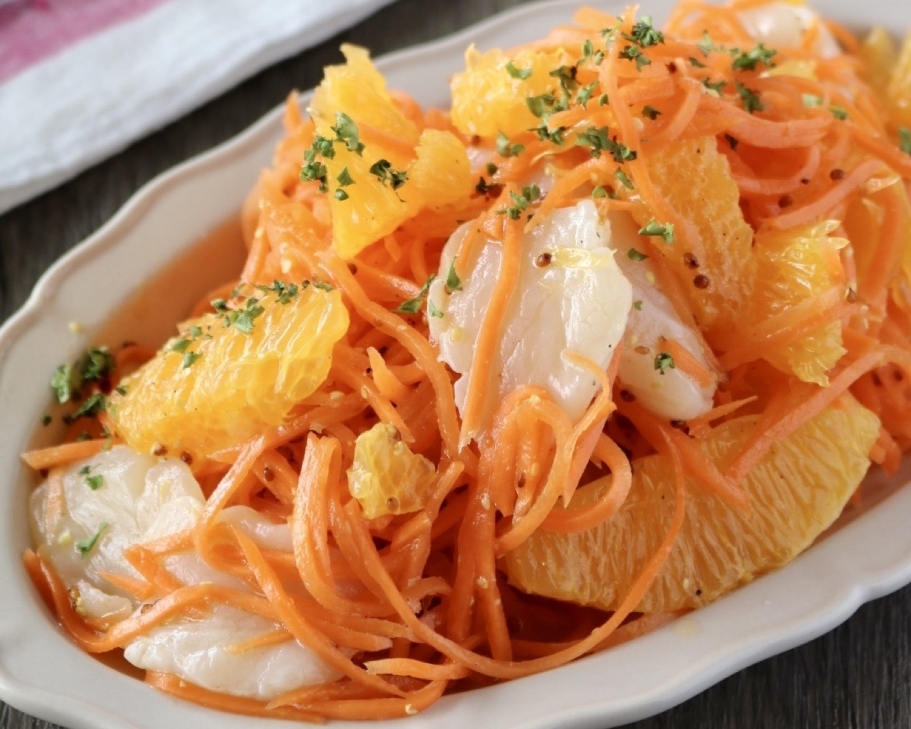

Aya Chef — Deux Assiettes
ページが足りなくて、泣く泣く外したものたち

オレンジとホタテのキャロットラペ。茶色いお肉のとなりに置くだけで、食卓の色が変わります
本を作るときは、いつも最後に「泣く泣く外す」時間があります。
おいしくないから外したのではなくて、ページが足りないから外したんです。
せっかくなので、その12組をここに置いておきますね。
どれも本と同じで、メイン1皿と、となりの1皿の組み合わせです。
01
チキンソテー 粒マスタードソース
＋ キャロットラペいちばん失敗しない組み合わせなので、最初にこれを。焼いたフライパンにマスタードと生クリームを入れるだけでソースになります鶏肉のトマトクリーム煮込み
＋ ブロッコリーのアンチョビバター寒くなってきたら、これ。トマトと生クリームは、煮立てないのがコツなんですチキンのカレークリーム煮込み
＋ ニース風サラダお子さんがいるおうちで、いちばん喜ばれます。カレー粉はほんの少しで十分豚肉のソテー クリームソース
＋ ポムピューレおうちがビストロになる組み合わせ。じゃがいもはメークインを選ぶと、なめらかに仕上がります豚肉のソテー オレンジソース
＋ グリル野菜のマリネお肉に果物、意外に思われますが、脂をすっと切ってくれるんですガーリックアボカドシュリンプ
＋ プチトマトのマリネ15分でできます。帰りが遅くなった日のために覚えておいてほしい一皿02
ホタテのポワレ ブールブランソース
＋ アスパラのソテー見た目がいちばんフレンチになります。ホタテは強火で30秒、中は半透明のままで鮭の焼くだけソース
＋ ヴィシソワーズ（材料2つ）焼いて、ソースをかけるだけ。スープはじゃがいもと牛乳だけでできますマグロのごまソテー
＋ そうめんのタブレ風お刺身が余った日に。表面だけ焼いて、中は生のままがおいしいですきのこレモンクリームパスタ
＋ 大根とりんごのポタージュ疲れた日の麺の日。大根がスープになるなんて、と驚かれます春キャベツとアサリの白ワインスープ
＋ バゲット＋エスカルゴバター春に作ってほしい一皿。スープをパンですくって食べるところまでが献立です海老のビスク炊き込みリゾット
＋ 水菜とオレンジのサラダ炊飯器に入れて、あとは放っておくだけ。お客さまが来る日にどうぞAya Fukazawa — Cuisine de Tous les Jours